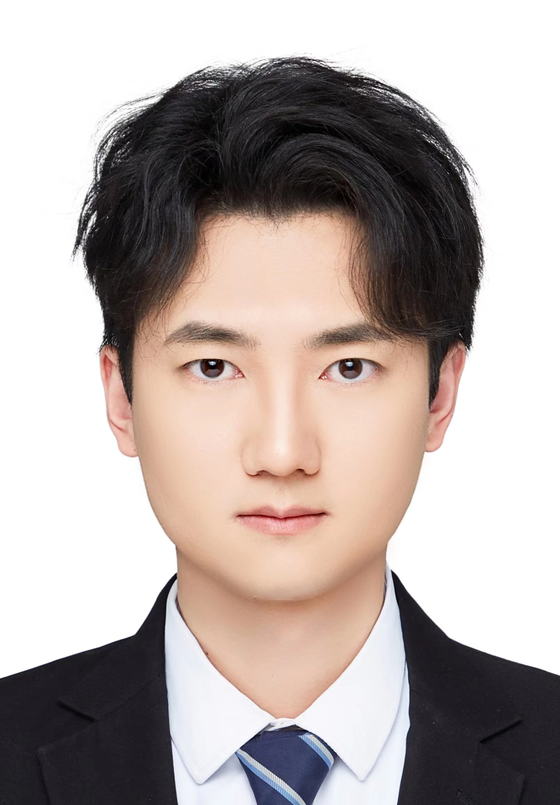

Zhijie Rao饶智杰PhD Student
Faculty of Engineering |
 |
I am currently a PhD student at the Hong Kong Polytechnic University, supervised by Dr. Jingcai Guo. I received my M.Eng degree from Xiamen University, supervised by Prof. Yue Huang and Prof. Xinghao Ding. Before that, I received the B.Eng degree from Beijing University of Posts and Telecommunications.
My research interest spans machine learning and computer vision, with a particular focus on resource-constraint AI, including, but not limited to, transfer learning, few-shot learning, and zero-shot learning.
[10/2024] One paper accepted by TNNLS.
[05/2024] One paper accepted by IJCAI2024.
SRCD: Semantic Reasoning With Compound Domains for Single-Domain Generalized Object Detection
Zhijie Rao, Jingcai Guo, Luyao Tang, Yue Huang, Xinghao Ding, Song Guo.
IEEE Transactions on Neural Networks and Learning Systems (TNNLS), 2023.
Dual Expert Distillation Network for Generalized Zero-Shot Learning
Zhijie Rao, Jingcai Guo, Xiaocheng Lu, Jingming Liang, Jie Zhang, Haozhao Wang, Kang Wei, Xiaofeng Cao.
International Joint Conference on Artificial Intelligence (IJCAI), 2024.
Domain Generalized Object Detection with Triple Graph Reasoning Network
Zhijie Rao, Luyao Tang, Yue Huang, Xinghao Ding.
International Conference on Neural Information Processing (ICONIP), 2023.
Domain Generalization via Implicit Domain Augmentation
Zhijie Rao, Qi Dong, Chaoqi Chen, Yue Huang, Xinghao Ding.
International Conference on Neural Information Processing (ICONIP), 2023.
Adaptive Ship Detection from Optical to SAR Images
Yuxuan Yuan, Zhijie Rao, Chuyang Lin, Yue Huang, Xinghao Ding.
IEEE Geoscience and Remote Sensing Letters (GRSL), 2023.
Journal Reviewer
IEEE Transactions on Pattern Analysis and Machine Intelligence (TPAMI)
IEEE Transactions on Neural Networks and Learning Systems (TNNLS)
IEEE Open Journal of the Computer Society (OJCS)
Conference Reviewer
The Association for the Advancement of Artificial Intelligence (AAAI), 2025
ACM Multimedia (MM), 2024
Asian Conference on Computer Vision (ACCV), 2022
International Conference on Neural Information Processing (ICONIP), 2023